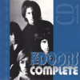
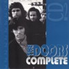
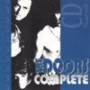
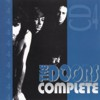
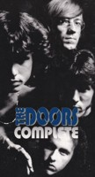
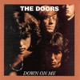
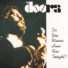

THE DOORS (CD)
Live & Alive Imtrat imm 40.90354, Germany
1995 |
| 1.Roadhouse Blues/ 2.Back Door Man/
3.Money/ 4.Rock Me Baby/ 5.Little Red Rooster/
6.Who Do You Love/ 7.Light My Fire-Summertime-St.
James Infirmary-Fever-Light My Fire (cover just
says Light My Fire/Fever)/ 8.The End |
| Sources: Pacific National Exhibition
Coliseum, Vancouver, Canada, June 6th, 1970
(cover gives no source; it just says Original
Live Recorded). |
| Soundquality: |
 |
| Rarity Of Material: |
|
| Visual Attractiveness: |
|
A mediocre CD with an interesting cover showing Val
Kilmer instead of Jim Morrison. Interesting because the
name The Doors is printed in silver letters on the
plastic box. The songs are pretty well-known by now. The
disc comes as a cheapo disc - nobody should pay more than
$5 for it.
THE DOORS (CD)
Sakkaris Records Ltd., History Of Records HR
52016, Greece 1990 |
| 1.Light My Fire-Graveyard Poem-Light My
Fire (cover just says Light My Fire)/ 2.Little
Red Rooster/ 3.The Unknown Soldier (cover says
Unknow Soldier - sic)/ 4.Moonlight Drive-Horse
Latitudes (cover says Moonlight Drive A Horse
Latitudes); 5.Spanish Caravan/ 6.You Make Me Real
|
| Sources: The official CDs Alive She
Cried and Live At The Hollywood Bowl, both later
on the official album In Concert. |
| Soundquality: |
|
| Rarity Of Material: |
|
| Visual Attractiveness: |
|
The only Greek bootleg CD got vastly distributed in
Europe. Although the material definitely is not
interesting, bootleggers copied this one for the 3 CD box
Light My Fire (Starlife ST 3606) and for the 2 CD
box Jim Morrison - Special Limited Edition
(Starlife ST 2905). The cover of the Starlife copy is the
same, they just changed the order number.
THE DOORS (1 CD-ROM)
VALPRO Interactive, Russia 1997 |
| Soundquality: |
|
| Rarity Of Material: |
|
| Visual Attractiveness: |
|
Finally, even the bootleggers have discovered the new
media of CD-Rom. What is most astonishing about this
release is the country of its release - Russia. The disc
has just got a xeroxed black & white cover with a
Russian text on the back. The copy that I have is just a
CD-R; a self-made computer copy. I have no idea if this
is distributed as a real print as well. The content is
surprising, too. There are 11 Doors videos on it (all
taken from the official video Dance On Fire); there's a
slide show overdubbed by the song The End and a Russian
narrator; there are 62 (!) songs from The Doorsae
official studio albums on it; there are the lyrics of all
official songs; there are 73 nice (partly rare, üartly
from Oliver Stone's film) photos in perfect quality and
there's the introduction taken from the First Flash Of
Eden bootleg (the announcer and a part of Back Door Man).
Of course, the Russians made a few mistakes re-naming the
videos: Texas Radio & The Big Beat Vol.2 is nothing
but Love Me Two Times, and Horse Latitudes is nothing but
Moonlight Drive. On the other hand this would make a
pretty good official interactive CD-ROM; the videos
should be in better quality, though.
THE DOORS (CD in a paper
cover)
Aulica A 141/S, Italy 1993 |
| 1.I'm A King Bee/ 2.Summertime (cover says
Instrumental)/ 3.Summer's Almost Gone/ 4.Money/
5.Who Do You Love/ 6.Moonlight Drive/ 7.Gloria |
| Sources: All songs recorded at the
Matrix Club, San Francisco, March 10th, 67;
copied from the double CD The Matrix Tapes (The
Swingin' Pig, TSP-CD-047-2). |
| Soundquality: |
|
| Rarity Of Material: |
|
| Visual Attractiveness: |
|
No jewel box was used, but a paper jacket including a
track sheet. It's just 36 minutes long and not worth the
money a hard core collector would spend on it. We have
enough of Aulica discs by now. This originally came with
a catalogue of all Aulica CDs.
THE DOORS ARE STRANGE (CD)
TDCD 4862, Germany 1994 |
| 1.Excerpt from Five To One plus rap (cover
says Intro)/ 2.Moonlight Drive/ 3.Hello I Love
You/ 4.Summer's Almost Gone/ 5.My Eyes Have Seen
You/ 6.End Of The Night/ 7.Insane (cover says Go
Insane)/ 8.Roadhouse Blues/ 9.Rap/Back Door
Man/Five To One/ 10.Do It (cover says Let It
Bleed)/ 11.Peace Frog/ 12.The Chant Movement/
13.Who Scared You/ 14.The Soft Parade |
| Sources: Tracks 1 and 9= Dinner Key
Auditorium, Miami, March 1st, 1969; Tracks 2-7=
Demo Acetate, World Pacific Studios, L.A.,
Septem- ber2nd,1965 (copied from a VERY scratched
copy of the vinyl bootleg Resurrection); Track 8=
Pacific National Exhibition Coliseum, Vancouver,
June 6th, 1970 (copied from a VERY bad tape copy
of a Westwood One Radio Show); Tracks 10 and 13=
original Elektra LP versions (cover says
unreleased demo and 12/12/70); Track 11=Felt
Forum, New York, January 17th,1970; Track 12=
from the album Requiem For The Americas (cover
says New Orleans, 12/12/1970!); Track 14= from
official video The Soft Parade, recorded at the
Critique Show; PBS TV, WNET, New York, May 13th,
1969. |
| Soundquality: |
to |
| Rarity Of Material: |
|
| Visual Attractiveness: |
|
A copy of one of the worst compilations ever,
previously released as The Killer Awoke (Kiderian
Rekords TDCD 4862)! This CD in a clear roundbox is
another waste of plastic, and we know it is our damn duty
to ignore those rip-off CDs. Even the black & white
photos are not rare at all but copies from well-known
books.
THE DOORS COMPLETE (4 CD
longbox)
Red Phantom and Great Dane Records GDRP
001/2/3/4, Italy, 1992 |
Disc One (CLASSICS LIVE 1967/1968):
1.Soul Kitchen/ 2.People Are Strange/ 3.Moonlight
Drive/ 4.Break On Through/ 5.Back Door Man/
6.Close To You/ 7.The Crystal Ship/ 8.Twentieth
Century Fox/ 9.Unhappy Girl/ 10.Love Street/
11.Love Me Two Times/ 12.The Hill Dwellers/
13.The Unknown Soldier/ 14.You're Lost Little
Girl/ 15.Wild Child/ 16.Wake Up/ 17.Touch Me
Disc Two (CLASSICS LIVE 1970):
1.Someday Soon/ 2.Five To One/ 3.When The Music's
Over/ 4.Peace Frog/ 5.Build Me A Woman/ 6.Light
My Fire/ 7.The End/ 8.Roadhouse Blues
Disc Three: (CLASSICS COVER 1967/1970):
1.Money/ 2.I'm A King Bee/ 3.Gloria/
4.Summertime/ 5.Alabama Song/ 6.Get Off My Life/
7.Crawling King Snake/ 8.Mystery Train/ 9.Back
Door Man/ 10.Rock Me Baby/ 11.Little Red Rooster/
12.Who Do You Love
Disc Four: (OUTTAKES):
1.Moonlight Drive/ 2.Hello I Love You/ 3.Summer's
Almost Gone/ 4.My Eyes Have Seen You/ 5.End Of
The Night/ 6. Insane (cover says Go Insane)/
7.Someday Soon/ 8.Rock Is Dead/ 9.Poetry Session/
10.Orange County Suite |
Sources: Disc One - 1-4=Matrix Club,
San Francisco, March.10th, 1967; 5-9=Matrix Club,
San Francisco, March 7th, 1967;
10-13=Konserthuset, Stockholm, Sweden, September
20th, 1968, early show; 14-16=Konserthuset,
Stockholm, Sweden, September 20th, 1968, late
show); 17=Smothers Brothers Comedy Hour, Los
Angeles, December 4th, 1968).
Disc Two - 1-2=Center Coliseum, Seattle, June
5th, 1970, short version; 3,6-8=Pacific National
Exhibition Coliseum, Vancouver, Canada, June 6th,
1970, cover says Seattle, which is not true;
4=Felt Forum, New York, January 18th, 1970, late
show; 5=Felt Forum, New York, January 17th, late
show.
Disc Three - 1-7=Matrix Club, San Francisco,
March 7th and 10th, 1967; 8=Center Coliseum,
Seattle, June 5th, 1970, cut version, cover says
June 7th, which is not true); 9-12=Pacific
National Exhibition Coliseum, Vancouver, Canada,
June 6th, 1970.
Disc Four - 1-6=Demo Acetate, World Pacific
Studios, Los Angeles, September 2nd, 1965;
7=Center Coliseum, Seattle, June 5th, 1970, cover
says Outtakes Sessions Of Morrison Hotel, which
is not true; 8=Session for the album The Soft
Parade, Elektra Sound Studios, Los Angeles,
February 25th, 1969, short version; 9+10=Poetry
session, Elektra Sound Studios, Los Angeles,
March 1969, not a Doors recording but Jim
Morrison only, both tracks are not complete. |
| Soundquality: |
to |
|
|
|
|
 |
|
 |
|
 |
|
 |
| Rarity Of Material: |
|
|
|
|
|
|
|
|
| Visual Attractiveness: |
|
|
|
|
|
|
|
|
A luxurious glossy hardcover longbox containing 4 CDs, a
beautiful 24-page booklet and a colour poster make one of
the nicest Doors CD compilation boxes of all time. All
four picture CDs and their covers had been designed
individually. Sure, all tracks have been published on
countless bootlegs before, but this seems to be the first
attempt to produce an intelligentcompilation. For the
first time somebody tried to publish a concept box, not
just another uninteresting compilation. Despite a few
tiny mistakes (check the sources) and the inclusion of a
longer Someday Soon version (copied from Live
In Seattle, Flashback Worldproductions 02.92.0170)
and a short version (from The Doors From The Inside
radio show, but the same concert), this box is a perfect
collector's item. Some interesting liner notes and a list
of 51 different Doors bootleg CDs including all their
tracks made the booklet very attractive at the time of
ist release. It also contains many photos, mostly from
Frank Lisciandro's books and Danny Sugerman's Illustrated
History book. The extra colour poster shows the
covers of all 51 CDs mentioned. A great work. Although
the box is pretty expensive, it is worth the money and
without any doubt recommended for the true fan.

THE DOORS featuring ALBERT
KING - FEEL THE BLUES (CD)
American Concert Series ACS 024, Italy 1992 |
| 1.Roadhouse Blues/ 2.Back Door Man-Five To
One/ 3.When The Music's Over/ 4.Who Do You Love/
5.Light My Fire-Fever-Summertime-St.James
Infirmary-Light My Fire (cover just says Light My
Fire)/ 6.The End |
| Sources: Pacific National Exhibition
Coliseum, Vancouver, Canada, June 6th, 1970. Same
tracks as Canadian Night (Buccaneer Records BUC
011), but the songs fade in and fade out. |
| Soundquality: |
|
| Rarity Of Material: |
|
| Visual Attractiveness: |
|
This CD is a perfect example how to take a good
quality radio show and produce something bad of it. First
- they used a tape copy instead of the original vinyl
show. Second - they fade in the songs and, of course,
they fade out as well. Horrible! Buy Canadian Night
(Buccaneer Records BUC 011) it has the same songs in
better soundquality and no fades at all. Avoid Feel The
Blues. Despite the rare photo on the front (reprinted in
bad quality) from The Doors' 1968 Top Of The Pops
appearance) there isn't anything good to say about this
CD.
THE DOORS LIVE (CD)
Fremus S.A.S. CDFR 0479, Italy 1993 |
| 1.Close To You/ 2.The Celebration Of The
Lizard/ 3.Soul Kitchen/ 4.Spanish Caravan/
5.Little Red Rooster/ 6.Who Do You Love/
7.Universal Mind/ 8.Break On Through #2. |
| Sources: In Concert (Elektra
961082-2), official CD. |
| Soundquality: |
|
| Rarity Of Material: |
|
| Visual Attractiveness: |
|
The second Doors release by Fremus. Check their other
CD with the same title. Needless to say, that this
Italian CD is definitely not worth to be collected for
the songs. You know what? I am sure they will continue
putting out Doors Live bootlegs taken off the In Concert
album. Just wait. This disc - like the first Fremus
release - is also known as Golden Age - The Doors Live.
THE DOORS LIVE (CD)
T.D.M. 29, Italy 1992 |
| 1.Light My Fire/ 2.Break On Through/
3.Roadhouse Blues/ 4.When The Music's Over/
5.Love Me Two Times/ 6.Five To One |
| Sources: 1=Hollywood Bowl, Los
Angeles, July 5th, 1968, from official video Live
At The Hollywood Bowl; 2+3=Felt Forum, New York,
January 17th, 1970, late show; 4-6= Konserthuset,
Stockholm, Sweden, September 20th, 1968, late
show. |
| Soundquality: |
|
| Rarity Of Material: |
|
| Visual Attractiveness: |
|
First I thought this was a copy of one of the other The
Doors Live CDs (More Record Production) but then I
noticed the different source of the song Light My Fire
and the omission of The Celebration Of The Lizard.
But that doesn't matter. This too is just another useless
compilation. Is it really necessary to mention that a
copy with a red back cover was seen at a record fair?
THE DOORS LIVE (CD)
More Record Production CDDV 5508, Italy 1991 |
| 1.Break On Through/ 2.Light My Fire/
3.Roadhouse Blues/ 4.Five To One/ 5.Love Me Two
Times/ 6.When The Music's Over/ 7.The Celebration
Of The Lizard |
| Sources: 1+3=Felt Forum, New York,
January 17th, 1970, late show;
2,4-6=Konserthuset, Stockholm, Sweden, September
20th, 1968, late show; 7=Felt Forum, New York,
January 18th, 1970, late show. |
| Soundquality: |
|
| Rarity Of Material: |
|
| Visual Attractiveness: |
|
Fair enough, this useless CD has got an astonishingly
good sound. All tracks have been published before on many
other CDs. This is the version with the bar code on the
backcover. The second edition has the same content, the
same design on disc, the same backcover (without
bar-code), but a totally different cover. It seems
somebody is selling his uninteresting product twice. The
cover of the second edition is worse than the one of the
first edition.
THE DOORS LIVE (CD)
Fremus S.A.S. CDFR 0379, Italy 1993 |
| 1.When The Music's Over/ 2.Moonlight
Drive/ 3.The Unknown Soldier/ 4.Build Me A Woman
(cover says Duild Me A Woman)/ 5.Back Door Man/
6.Alabama Song/ 7.The End/ 8.Wake Up/ 9.You Make
Me Real/ 10.Five To One/ 11.Horse Latitudes/
12.Light My Fire |
| Sources: In Concert (Elektra
961082-2), official CD. Track 12 is the short
version from the Live At The Hollywood Bowl CD
EP. |
| Soundquality: |
|
| Rarity Of Material: |
|
| Visual Attractiveness: |
|
The first Doors release by Fremus. Check their other
CD with the same title. Needless to say, that this
Italian CD is definitely not worth to be collected for
the songs. In Concert was a great album for
bootleggers - they couldn't wait to use its songs for
their releases. No wonder the soundquality of the copies
is superb. This CD is also known as Golden Age - The
Doors Live.
DOWN ON ME (CD)
Oil Well RSC CD 117, Italy 1995 |
| 1.Summer's Almost Gone/ 2.I'm A King Bee/
3.Gloria/ 4.Break On Through/ 5.Summertime/
6.Back Door Man/ 7.Alabama Song/ 8.The End |
| Sources: Complete recording of set two
at the Matrix Club, San Francisco, March 10th,
1967. A copy of disc #4 (KTS 3016) of The
Complete Matrix Club Tapes (KTS BX 009). |
| Soundquality: |
|
|
|
|
|
 |
| Rarity Of Material: |
|
|
|
|
|
| Visual Attractiveness: |
|
|
|
|
|
If you own the box The Complete Matrix Club Tapes
(KTS BX 009) you should be aware that this mid-price CD
is a copy of disc #4 from the box. Fine cover, fine
quality. Limited to 200 copies only.
Note: On the four nicely designed Oil Well midprice discs
Summer's Almost Gone (RSC CD 114), Moonlight
Drive (RSC CD 115), Shake Your Moneymaker (RSC
CD 116) and Down On Me (RSC CD 117) you find the
complete recordings of four sets at the Matrix Club, San
Francisco, March 7th and March 10th, 1967. No wonder the
first set of March 10th is still missed - those discs
were copied from the great KTS box The Complete Matrix
Club Tapes. Altogether they are cheaper than the box
- so if you can't get that one, try to get the four.
DO YOU WANNA HAVE FUN
TONIGHT? (Double CD)
Oh Boy 2-9127, Luxembourg 1991 |
Disc One: 1.Roadhouse Blues/
2.Peace Frog/ 3.Alabama Song-Back Door Man-Five
To One/ 4.The Celebration Of The Lizard/ 5.Soul
Kitchen/ 6.Build Me A Woman/ 7.When The Music's
Over
Disc Two: 1.Bird of Prey/
2.Rock is Dead/ 3.An American Poet/ 4.Orange
County Suite 5.The Soft Parade Intro-Light My
Fire |
Sources: Disc One - Felt Forum, New
York, January 17th and 18th, 1970, late shows.
Tracks 1-5 and 7=late show January 18th; track
6=late show January 17th. Cover says the tracks
were recorded January 17th, which is just true
for track 6. A copy of New York Blues (Document
Records DR 033).
Disc Two - 1,3+4=Jim Morrisons first poetry
session, Los Angeles, Elektra Sound Studios,
March 1969 (cut version); 2=recording session for
the album The Soft Parade, Los Angeles, Elektra
Sound Studios, early 1969 (cut version); 5=Felt
Forum, New York, January 18th, 1970, late show
(cover says this was recorded on January 17th,
1970, which is not true. The list of poems is
incomplete). A copy of Orange County Suite
(Document Records DR 019). |
| Soundquality: |
|
|
|
|
|
 |
| Rarity Of Material: |
|
|
|
|
|
| Visual Attractiveness: |
|
|
|
|
|
As you see, one who owns the CDs Orange County Suite
(Document Records DR 019) and New York Blues
(Document Records DR 033) does not need this double CD,
which uses parts of the original artwork of the single
CDs. The CDs have exactly the same quality as the
originals, no wonder - they were made from the same glass
masters. While New York Blues is still a
masterwork, we have a fine substitute for Orange
County Suite now: Missing Links (Memorec 403)
and Jim Morrison - The Lost Paris Tapes (Jomo
3.5471.1). Alright?
DYNAMIC LIVE (CD)
Apple House Music DL-19, Australia 1994 |
| 1.Light My Fire/ 2.Touch Me/ 3.Roadhouse
Blues/ 4.Break On Through/ 5.Moonlight Drive/
6.The End/ 7.Summer's Almost Gone/ 8.Five To One/
9.Love Street/ 10.The Unknown Soldier/ 11.Little
Red Rooster/ 12.Gloria |
| Sources: 1=Matrix Club, San Francisco,
March 7th, 1967;2=Smothers Brothers Comedy Hour,
Los Angeles, December 4th, 1968; 3,4,6,11=
Pacific National Exhibition Coliseum, Vancouver,
Canada, June 6th, 1970; 5,7+12=Matrix Club, San
Francisco, March 10th, 1967; 8-10=Konserthuset,
Stockholm, Sweden, September 20th, 1968, late
show. |
| Soundquality: |
|
| Rarity Of Material: |
|
| Visual Attractiveness: |
|
All songs of this CD had been copied from European
bootleg CDs. For Japanese fans there might be interesting
material on it, but for Europeans Dynamic Live is nothing
special - just another compilation of well known
material.
|